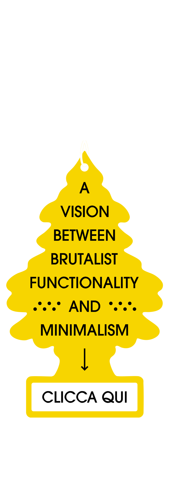
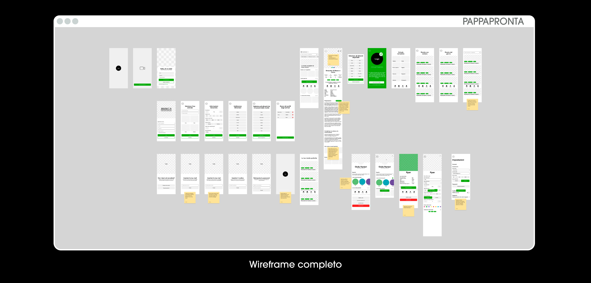
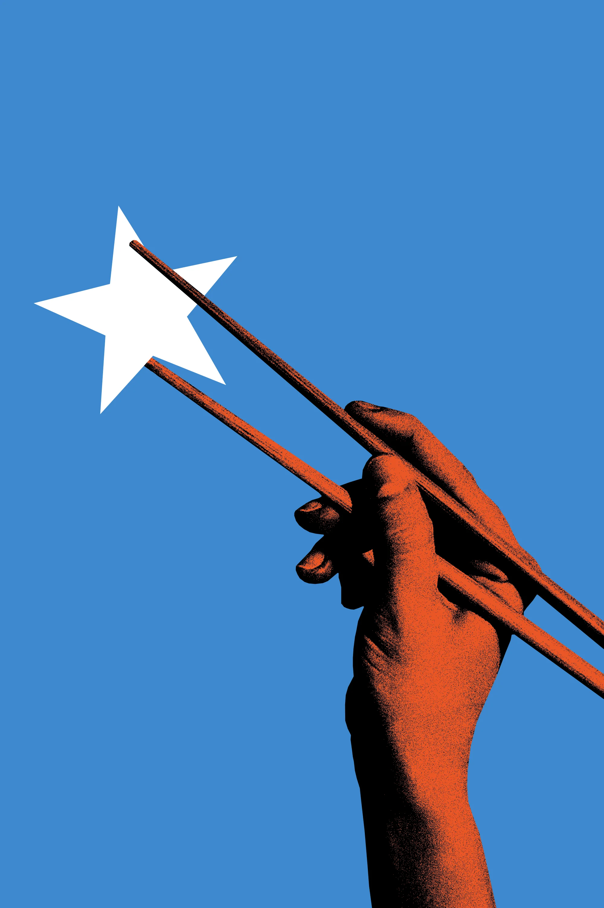

Giorgio Pulli, graphic designer specializzato in brand identity design e packaging design disponibile in Italia e Svizzera

About
Profilo professionale e aree operative
Mia sorella, Pulli Giulia, 23 anni fa decise di chiamarmi Giorgio.
Da piccolo mi piaceva disporre le pentole sulle scale della mia vecchia casa e suonarle come se fossero i pezzi di una batteria. Quel rumore mi faceva sentire invincibile.
Sono cresciuto sulla terra rossa tra gli ecomostri del Salento. Questo approccio grezzo, pratico e funzionale alla vita ha sviluppato velocemente in me un’attrazione quasi pornografica nei confronti del cemento e del brutalismo.
Maturando ho scoperto la bellezza delle grandi cose, perché l’amore per le piccole cose, da me, era alla base della vita quotidiana.
Sono sempre stato visceralmente affascinato dalla forma delle lettere, dai contrasti di colore, dalla carta, dalla teoria e da altre cose che solo a nominarle farebbero sbadigliare anche un Noppera-bo.
Iniziai, claudicando, il percorso di studi all’età di diciannove anni presso l’Accademia di Belle Arti di Lecce, dalla quale sono uscito con una valutazione di centodieci e lode. In quegli anni ho capito l’importanza del mestiere del grafico.
Le mie conoscenze si fondano su grandi nomi come Bruno Munari, Albe Steiner, Jan Tschichold, Robert Bringhurst e Noyz Narcos.
Due anni fa arrivai a Brescia pieno di speranze per iniziare il corso di Digital Design and Communication, che finirà nell’ottobre di quest’anno.
Amo l’arte, sono un patito delle avanguardie artistiche, tanto da aver coniato un nuovo movimento artistico (con manifesto annesso) per la mia tesi magistrale.
Mi piace circondarmi di gente strana e vivere in spazi angusti. Quando progetto devo stare scomodo, solo lì do il meglio.
Conosco a menadito la Suite Adobe, sono specializzato nella progettazione di brand, di packaging, di libri, di interfacce, di idee, di piatti raffinati e di giochi di parole.
Per trovare un senso alle mie giornate ascolto buona musica e parlo incessantemente dei miei interessi fino ad ammorbare le persone attorno a me.
In poche parole sono l'uomo giusto al momento giusto!
Hai un progetto? Parliamone: veeswalproject@gmail.com.
Da piccolo mi piaceva disporre le pentole sulle scale della mia vecchia casa e suonarle come se fossero i pezzi di una batteria. Quel rumore mi faceva sentire invincibile.
Sono cresciuto sulla terra rossa tra gli ecomostri del Salento. Questo approccio grezzo, pratico e funzionale alla vita ha sviluppato velocemente in me un’attrazione quasi pornografica nei confronti del cemento e del brutalismo.
Maturando ho scoperto la bellezza delle grandi cose, perché l’amore per le piccole cose, da me, era alla base della vita quotidiana.
Sono sempre stato visceralmente affascinato dalla forma delle lettere, dai contrasti di colore, dalla carta, dalla teoria e da altre cose che solo a nominarle farebbero sbadigliare anche un Noppera-bo.
Iniziai, claudicando, il percorso di studi all’età di diciannove anni presso l’Accademia di Belle Arti di Lecce, dalla quale sono uscito con una valutazione di centodieci e lode. In quegli anni ho capito l’importanza del mestiere del grafico.
Le mie conoscenze si fondano su grandi nomi come Bruno Munari, Albe Steiner, Jan Tschichold, Robert Bringhurst e Noyz Narcos.
Due anni fa arrivai a Brescia pieno di speranze per iniziare il corso di Digital Design and Communication, che finirà nell’ottobre di quest’anno.
Amo l’arte, sono un patito delle avanguardie artistiche, tanto da aver coniato un nuovo movimento artistico (con manifesto annesso) per la mia tesi magistrale.
Mi piace circondarmi di gente strana e vivere in spazi angusti. Quando progetto devo stare scomodo, solo lì do il meglio.
Conosco a menadito la Suite Adobe, sono specializzato nella progettazione di brand, di packaging, di libri, di interfacce, di idee, di piatti raffinati e di giochi di parole.
Per trovare un senso alle mie giornate ascolto buona musica e parlo incessantemente dei miei interessi fino ad ammorbare le persone attorno a me.
In poche parole sono l'uomo giusto al momento giusto!
Hai un progetto? Parliamone: veeswalproject@gmail.com.
Acli Racale
Branding, Art Direction e Packaging
Ho curato, assieme al mio collega ed amico Emanuele Leone, il logo redesign di Acli Racale, produttore e distributore d'importanza nazionale ed internazionale di patate e olio e, in solitaria, ho curato brand assets e packaging.
La sfida era prendere il logo originale e modernizzarlo per rendere l'azienda competitiva sul mercato non solo con i prodotti ma anche con la sua immagine.
La sfida era prendere il logo originale e modernizzarlo per rendere l'azienda competitiva sul mercato non solo con i prodotti ma anche con la sua immagine.

Io ed Emanuele, in tandem, abbiamo costruito due linee visive molto differenti, proprio per capire verso che direzione volevano andare.
La mia era modernista, bold, semplice ed immediata, mentre quella di Emanuele rivisitava i classici stemmi delle città salentine con un occhio fresco e pulito.

Una volta presentate le prime proposte il cliente ha deciso la terza via, quella di rimodernare il logo vecchio mantenendo le forme base (cerchio e sole) ma con un approccio più moderno e sintetico.

Approvato il logo, io ed Emanuele ci siamo divisi. Io mi sono occupato del ramo delle patate e lui di quello dell'olio.
Ho realizzato in prima battuta alcuni asset per la comunicazione del brand alle fiere, come banner e brochure, e poi mi sono occupato dei nuovi packaging delle cassette.

Per il packaging delle nuove cassette ho ideato tre concept diversi, ognuno con un approccio specifico per rispondere alle esigenze del mercato.
Acli Racale voleva una comunicazione autentica e semplice del prodotto, vicina al cliente, dunque ho definito il progetto con un design che mettesse al centro le patate e che le rappresentasse onestamente.

Il packaging è semplice ma estremamente funzionale.
É stato progettato in modo che, ogni volta che le cassette vengono incolonnate, le grafiche si uniscano da sopra a sotto e viveversa creando una cascata di patate.

Veeswal
Progetto di brand identity
È la pagina Instagram su cui sovente pubblico i miei progetti personali e non.
Il logo di Veeswal è un sunto perfetto del mio stile e del mio modo di fare grafica. Nasce da una sintesi estrema della prima parte del meccanismo ottico, costituito da pupilla (•), iride (}) e cristallino (<).
In fase di progettazione li ho stilizzati molto e il risultato finale è stato questo simpatico angioletto.
Cornici Mutti
Branding e Art Direction
Questo è il mio progetto accademico meglio riuscito. Per l'esame di Art Direction il prof si è improvvisato committente e ci ha assegnato il riposizionamento di un brand qualunque con sede in Via Milano, a Brescia.
La mia scelta è ricaduta quasi immediatamente sulla bottega artigiana Cornici Mutti. A prima vista potrebbe sembrare un soggetto noioso ma io avevo già le idee chiare e sapevo che il progetto sarebbe venuto una bomba!
La mia scelta è ricaduta quasi immediatamente sulla bottega artigiana Cornici Mutti. A prima vista potrebbe sembrare un soggetto noioso ma io avevo già le idee chiare e sapevo che il progetto sarebbe venuto una bomba!
Chiarita la comunicazione e la personalità del brand ho iniziato a produrre gli asset che mi hanno portato al risultato finale.


Pappa Pronta
Ui/Ux design e Branding di app
Pappa Pronta è un'appicazione di ricette per animali. L'idea del branding nasce dal naming che ho dato (evocativo e memorabile) accorpandolo a un'estetica sintetica ma al tempo stesso moderna.
Per prima cosa ho creato il logo dell'app. Ho unito la figura di una persona che porta due piatti a tavola e il muso del cane in un piccolo simbolo e ci ho adattato sotto il nome dell'app.
Per prima cosa ho creato il logo dell'app. Ho unito la figura di una persona che porta due piatti a tavola e il muso del cane in un piccolo simbolo e ci ho adattato sotto il nome dell'app.
Ora bisogna iniziare a sviluppare l'app. Ho fatto un bozzetto di wireframe e poi l'ho ricreato su Figma aggiungendovi flussi e tutte le funzionalità necessarie e utili per arrivare ad un livello di dettaglio già molto alto, nonostante si trattasse di un wireframe

Dopo il logo e il wireframe ho iniziato a sviluppare l'applicazione stilisticamente, con un viola distintivo, un mood molto caldo e vicino al consumatore. I bottoni sono chiari, i contrasti di colore sono perfetti e il risultato è molto frizzante e nuovo.

Finito il tutto bisognava solo adattare il wireframe al look del design system, aggiungere tutti i copy e l'app era pronta per la prototipazione.

Finite tutte le interfacce mi sono spostato su Protopie e ho prototipato l'intera app. Il risultato è un'app solida, semplice e utile per tutti i possessori di animali!
Spaghetti
Packaging design concept Brutalist Pasta
"Che non ti trovo mai, tipo il tempo di cottura della pasta" diceva Dani Faiv nella canzone Legame. Questa frase mi ha ispirato alla realizzazione e concretizzazione del progetto.

Brutalist Pasta è un concept ironico che nasce dall'esigenza di avere una confezione di pasta facile da aprire con il tempo di cottura in bella vista, senza altri inutili abbellimenti.


Sulla scatola di spaghetti ci sono tutte le informazioni necessarie e la più importante: don't break in half.


Posters
Selezione di poster editoriali e sperimentali




Contatti
Email: veeswalproject@gmail.com
Disponibile per nuovi progetti di brand identity, packaging, design editoriale e design di interfacce.
Instagram: @veeswal
LinkedIn: Giorgio Pulli
Behance: Veeswal
Area operativa: Lecce · Brescia · Italia · Mondo
Privacy e Cookie Policy
© 2026 Giorgio Pulli / Veeswal